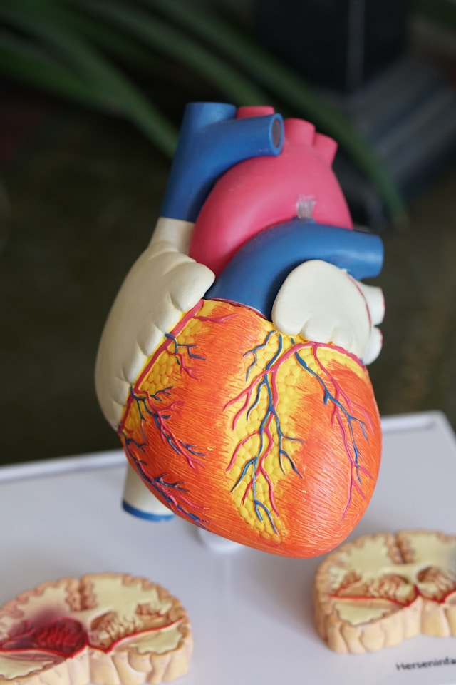

Cirugía Cardiovascular
La cirugía cardíaca es la especialidad quirúrgica que se ocupa del corazón o grandes vasos, realizada por un cirujano cardíaco. Frecuentemente se utiliza para tratar complicaciones de la cardiopatía isquémica (por ejemplo, mediante un baipás coronario), corregir malformaciones cardíacas congénitas, o tratar enfermedades valvulares del corazón debidas a causas diversas, como la endocarditis. También incluye el trasplante cardíaco.
Las primeras intervenciones en el pericardio (el saco que rodea el corazón) tuvieron lugar en el siglo xix y fueron realizadas por Francisco Romero, cirujano catalán, en la ciudad de Almería. Otros pioneros fueron Dominique Jean Larrey, Henry Dalton, y Daniel Hale Williams. La primera cirugía sobre el corazón propiamente dicho fue realizada por el cirujano noruego Axel Cappelen el 4 de septiembre de 1895 en el Rikshospitalet de Kristiania, ahora Oslo. La intervención consistió en la ligar una arteria coronaria sangrante en un hombre de 24 años que había sido apuñalado en la axila izquierda y que a su llegada estaba en un shock profundo. El abordaje fue a través de una toracotomía. El paciente se despertó y pareció estar bien durante 24 horas, pero enfermó y sufrió un aumento de temperatura, y acabó muriendo por lo que el examen post mortem probó que era una mediastinitis el tercer día de postoperatorio. La primera cirugía cardíaca exitosa, realizada sin complicaciones, fue llevada a cabo por el Dr. Ludwig Rehn de Fráncfort del Meno, Alemania, quien reparó una herida de una puñalada en el ventrículo derecho el 7 de septiembre de 1896. La cirugía de los grandes vasos (reparación de coartación aórtica, creación de un shunt de Blalock-Taussig, cierre de un conducto arterioso persistente), se volvió común con el cambio de siglo y entra en los dominios de la cirugía cardíaca, aunque técnicamente no pueda considerarse como tal.

En 1925 las operaciones de las válvulas del corazón eran desconocidas. Henry Souttar intervino con éxito a una mujer joven con estenosis mitral. Practicó una abertura en la aurícula izquierda e insertó un dedo en esta cavidad para palpar y explorar la válvula mitral dañada. La paciente sobrevivió durante varios años, pero los colegas médicos de Souttar de aquella época decidieron que el proceso no estaba justificado y no pudo seguir practicándolo. La cirugía cardíaca cambió significativamente después de la Segunda Guerra Mundial. En 1948 cuatro cirujanos llevaron a cabo operaciones exitosas de estenosis mitral secundaria a fiebre reumática. Horace Smithy (1914-1948), de Charlotte, retomó la intervención gracias al trabajo del Dr. Dwight Harken del Peter Bent Brigham Hospital usando un punch para extirpar una porción de la válvula mitral. Charles Bailey (1910-1993) del Hahnemann Hospital, Filadelfia, Dwight Harken en Boston y Russell Brock en el Guy's Hospital adoptaron el método de Souttar. Todos estos hombres empezaron sus trabajos independientemente, en el rango de unos meses. Esta vez la técnica de Souttar fue ampliamente aceptada, aunque hubo modificaciones. En 1947 Thomas Holmes Sellors (1902-1987) del Middlesex Hospital operó una Tetralogía de Fallot con estenosis pulmonar, reparando la válvula pulmonar con éxito. En 1948, Russell Brock, probablemente desconociendo el trabajo de Sellors, usó un dilatador especialmente diseñado en tres casos de estenosis pulmonar. Más tarde ese mismo año diseñó un punch para resecar la estenosis del cono arterioso, que se asocia frecuentemente a la tetralogía de Fallot. Se realizaron miles de estas operaciones “a ciegas” hasta que la introducción del bypass cardiopulmonar hizo posible la cirugía con visualización directa de las válvulas. Desde la década de los 90 los cirujanos han empezado a realizar la cirugía de derivación o bypass sin bomba, es decir, una cirugía de baipás coronario sin utilizar el bypass cardiopulmonar citado anteriormente. En estas operaciones el corazón late durante la cirugía, pero es estabilizado para proporcionar un área de trabajo prácticamente inmóvil. Algunos investigadores creen que esta técnica conlleva menos complicaciones postoperatorias (como el síndrome postperfusión) y mejores resultados globales (los estudios han resultado controvertidos, por lo que hoy en día la preferencia del cirujano y los resultados del hospital siguen teniendo un rol determinante).


.jpg)